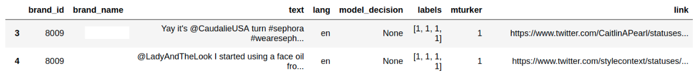
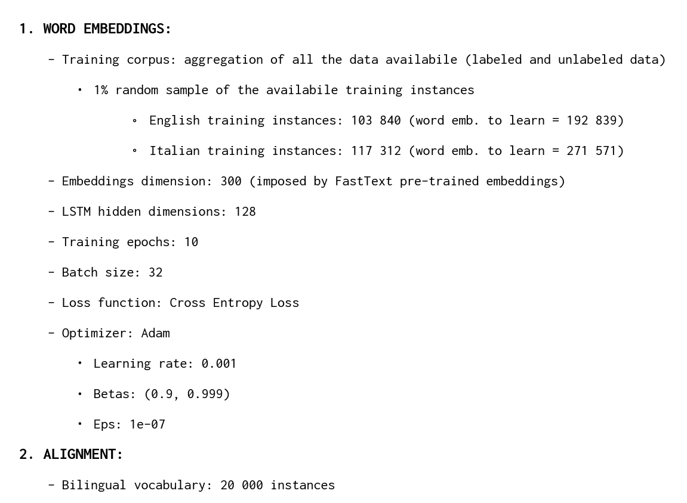
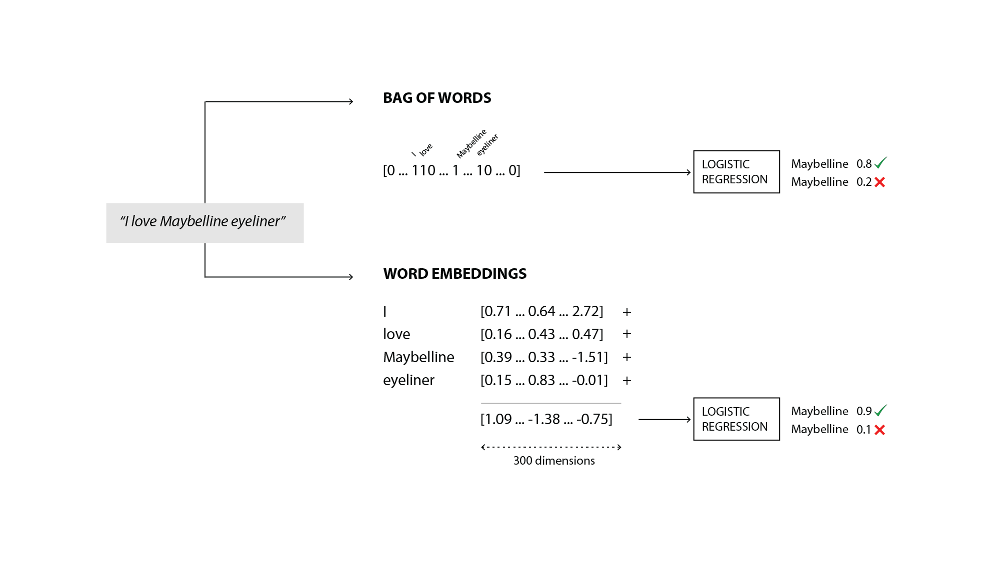

Capstone Course - Spring 2018
Datashack Program
Datashack Program
Team: Andrea Porelli, Srivatsan Srinivasan [IACS, Harvard University] | Alessandro Bianchi, Ginevra Terenghi [Politecnico di Milano]
View on GitHub
Tool demo
View on GitHub
Tool demo
Tribe Dynamics
Abstract
Tribe Dynamics is a San Francisco-based consulting company that measures social media engagement for beauty, fashion and lifestyle brands and uses these engagement metrics to suggest better social media marketing strategies. In this process, they use text classfiers to perform natural language understanding to decipher whether a particular post is talking about a brand or not.With a large client base in USA, Tribe has begun to expand operations across the globe. Their classifier currently underperforms when understanding posts in Non-English languages naturally because of parsimonious data available and certain language structures being hard to learn. In this project, we target at developing classifier models that scale well across languages. Crucially, our models are able to transfer knowledge garnered in one language on to the other which makes us strongly leverage the data and model's core strengths in English.
In this study, we present two approaches that we used to try to solve this problem. The first one, through neural network language modeling, learns monolingual word embedding representations(that represents words on some compact vector space) which, through appropriate transformations can be aligned across languages to create a shared context vector space. We can build any classifier on this shared vector space and the model is able to learn features from language-agnostic data, thus virtually creating a universal language. The second model attempts to translate all posts into source language (English), trains a classification model only in the source language and is able to transfer the model to other languages through purely word translation probabilities. We learn word translation probabilities through a mixture model and perform inference via Expectation Maximization.
1. Introduction
Tribe Dynamics is a consulting company that provides measurements of social media engagement for beauty, fashion and lifestyle brands. They have been consulting, mostly in the American market, for the last four years, providing web-based tools and periodic reports to their clients, to track their social media engagement. Their marquee offering is a metric called Earned Media Value (EMV) which is derived out of various engagement markers (e.g. likes, comments, shares, etc.) collected from their clients’ social media posts.
To calculate these metrics, they collect textual posts by scraping popular social media platforms (e.g. Facebook, Twitter, Instagram, Youtube, etc.) using customized search phrases that are provided by their in-house experts. Once these posts have been collected and appropriately cleaned, it is imperative to filter them, identifying if a post is talking about a particular brand or a particular class of products. Tribe has been highly successful in this task with American brands, whose posts are mostly in English, with their proprietary classification model.
Over the last couple of years, they have been rapidly expanding into the European and Asian markets. Naturally, the language repertoire of their posts has been growing accordingly. Their model does not perform with the same efficiency, achieved on the English text classification, across these new languages (0.95 AUC on English against 0.76 on non-English text). In particular, their model needs sufficient training data in these new languages before being able to train correctly. This problem is at the center of what our project tries to accomplish - provide a model that scales well across different languages with limited amount of training data, while exploiting the structural similarity across languages.
2. Scope and project outline
The fundamental goal of the project is to improve upon Tribe’s proprietary classification model, both from performance and operational standpoints to essentially develop a brand classification model that scales well across languages with limited amount of training data. Crucially, the model is expected to transfer knowledge learned from posts in one language when trying to understand posts in another language. To this extent, we investigated two approaches that could take on this challenging task. First, we trained multi-language aligned word embedding representations using neural language models from several sources of data, thus creating a universal compact language representation in the latent space. This space allows for any classifier to be built on it and will serve as a universal model for any language in future. Additionaly, we developed an evaluation framework of these word embeddings representation, through a web-based visualization tool that serves as a facilitator for Tribe’s developers to join the human-in-the-loop pipeline, to directly assess the quality of the representation and devise where to act in case something needs to be improved. Secondly, we develop another model which uses our core competency in English and translates posts word-by-word to English. In doing so, we also learn a mixture of translations(a graphical model where we do inference via Expectation Maximization) since translations are not on-to-one maps. With both these techniques, we were able to accomplish knowledge transfer, better maintenance because of single model, data efficiency(model performs well with a subset of data in target languages) and compact contextual representations. The project employs several salient concepts from natural language processing such as bag of words/n-grams, logistic regression, neural network language models, LSTMs, word embeddings, multi-channel embedding training, structured graphical models, exact inference via expectation maximization and general optimization problems in embeddings alignment. The classifiers built in these models are applicable far and wide beyond Tribe Dynamics' business problems in all settings that require scalable cross lingual text classification such as sentiment analysis, content classification, spam detection etc.
3. Procedures and methods
3.1 Data exploration
3.1.1 Labeled data
For our study, Tribe provided us 106 datasets (one dataset per brand) in which entries are specified as follows:

These datasets are used to serve the task of binomial classification, which means determining whether a particular social media post is about a specific brand or not. Each of the entries in the datasets represents a social media post that was gathered querying social media platforms, according to keywords provided by Tribe’s in-house experts. Most of these features are self explanatory. Following is a brief description of the less immediate ones:
mturker:
being a supervised classification task, labeling is required. A value of 1 in this feature indicates that the labeling was performed by one (or more) individuals from Amazon MTurk. A value of 0 would indicate that the labeling was performed by one (or more) Tribe's employees.
labels:
list of labels that indicates which class each of the labelers assigned to the provided post. Eventually, these labels will be aggregated into a single value according to majority voting (if a tie is present, it will be mapped to 0 to reduce false positives presence).
In order to provide a more accurate understanding of the pipeline which we wanted to deploy, we decided to focus our attention only on English and Italian languages. First, because three components of our group are native Italian speakers, which simplifies the process of manual evaluation of the provided text. Furthermore, Tribe wants to expand internationally to Europe. Italian is a Latin language, so it shares with Spanish and French - two of the most common idioms of the European continent - the same linguistic structure, thus enabling the possibility of transfering the same ideas that were applicable in Italian, to the other mentioned languages.
It is important to notice that, on this reduced datasets, the disparity between the number of English training instances and Italian ones is substantial. Moreover, we identified a considerable class imbalance among all datasets, which greately impacts the performance of the classification and which forced us to use other performance metrics, instead of accuracy, to evaluate the results.
It is important to notice that, on this reduced datasets, the disparity between the number of English training instances and Italian ones is substantial. Moreover, we identified a considerable class imbalance among all datasets, which greately impacts the performance of the classification and which forced us to use other performance metrics, instead of accuracy, to evaluate the results.
3.1.2 Unlabeled data
For the purpose of training the word embeddings, Tribe also provided us two large sized datasets (7’739’316 instances for the Italian dataset, 9’154’680 for the English one), which gathered a set of scraped social media posts, without any data preprocessing or labeling previously performed on them. The csv files simply look like this:
To make the computations feasible and reduce the amount of noise present in the data, we had to perform some data cleaning procedures, which we will detail in this upcoming chapter.
3.2 Data cleaning
Before performing the cleaning of each post in the unlabeled datasets, we perform a sentence tokenization of the entire corpus, through the NTLK sentence tokenizer. This facilitates the cleaning process with regular expressions and avoids merging together multiple sentences, after punctuation is removed, which would result in an undesired behavior if we want to use this data for language modeling purposes.
Inspired by the preprocessing Perl script that was used to clean the training data for the FastText Wikipedia embeddings - which we will detail later on - each of the sentence tokenized posts is processed with the following instructions:
remove_regexp_from_string(input_string, regexp_str, replacement) using regular expressions Python’s package re, replaces each match of the regular expression in the input string, with the replacement parameter, eventually producing a cleaned string that can be used as a building block of the word embeddings training corpus.
3.3 Computational resources
The primary programming language that was used in this project is Python. To process the data, we took advantage of Pandas and NLTK. For statistical modeling, we used scikit-learn and PyTorch, as the deep learning framework to learn the embeddings, because of its strong GPU acceleration capabilities. The web-based visualization tool was built using HTML, CSS and Javascript, by means of its data visualization library D3. Amazon Web Services was used to train the embeddings on the cloud, taking advantage of an NVIDIA GK210GL (Tesla K80) GPU. Finally, GitHub was used for project collaboration and version control.
4. Model 1: Cross-Lingual Aligned Word Embeddings
4.1 Bilingual word embeddings
4.1.1 Word embeddings
Before diving into the gory details of how we were able to train our embeddings, let's first define what word embeddings are. Word embeddings, by definition, is the collective name for a set of language modeling and feature learning techniques in natural language processing (NLP) where words or phrases from the vocabulary are mapped to vectors of real numbers. Conceptually it involves a mathematical embedding from a space with one dimension per word to a continuous vector space with much higher dimension. The idea behind word embeddings is that words are clustered by meaning in this multi-dimensional vectorial space. A model - in our case a neural network - to learn this representation, it must rely on a fundamental linguistic assumption: words appearing in similar contexts are related to each other semantically, also known as the distributional hypothesis.
4.1.2 Data preparation
In order for the neural network to learn the embeddings, it has to receive inputs and targets according to a specific format. Because of this, additional operations needed to be performed on the training corpus for the NN to be able to process the data. After having tokenized all the sentences in the corpus, to each of them the
<BOS> and <EOS> tokens were added - respectively at the beginning and at the end of the sentence - to indicate were each sequence was respectively starting and ending. Then, to limit both spatial and temporal computational complexity, we reduced the vocabulary to incorporate only words that had a minimum number of occurrences equal to 10, thus mapping all of the infrequent ones to the <UNK> tag.
Since training the neural network in batches is a physical necessity - unless we could fit the entire training corpus in memory at once - we had to design a way to reduce all sentences to have the same length. A common approach that is used in the literature is what is called padded sequences. This technique, deployed mostly when dealing with time series data, simply consists in setting the size of each sequence to be as long as the longest sequence in the corpus, thus repeating the concatenation of a padding token - which in our case was
<PAD> - to the end of each sequence, until it matches the length of the longest sequence availabile. Once we applied this preprocessing step, we realized that the dataset was becoming unnecessarily large. A more accurate analysis, revealed that some of these tokenized posts had a sequence length that was in the order of thousands of words per post, which was totally unrealistic for a sentence tokenized piece of text. Having recognized this problem, we decided to prune sentences that contained more than 52 tokens - including <BOS> and <EOS> - in order to have the dimensionality of the sequence into a manageable size.
Finally, since the neural network accepts only numerical input tensors, each word was mapped to an index value, which simply reflected the position of the word inside the vocabulary.
4.1.2.1 Neural network language modeling
A language model is a probability distribution over sequences of words. Given such a sequence, say of length m, it assigns a probability  "P(w_1,...,w_m)") to the whole sequence. In our case, we have trained a Recurrent Neural Network word-level language model. That is, we gave to the RNN - precisely an LSTM (Long Short-Term Memory) - a sequence of words, coming from a social media post, and asked it to model the probability distribution of the next word in the sequence given a sequence of previous words, repeating this process for each post in our training corpus. In terms of inputs and expected outputs, for each padded sequence - detailed in the previous chapter - the neural network takes as input all the words in the sequence, but the last one, while the target is all the words in the sequence, but the first one. This way, for each word in input, the neural network tries to predict the next word in the sentence in output. The reason why this model is suitable for learning word embeddings is the argument that if the model is able to learn a language (able to predict next word), its hidden layers should be able to map the context behind the words. Hence, we use the hidden layer vectors as our embeddings.
to the whole sequence. In our case, we have trained a Recurrent Neural Network word-level language model. That is, we gave to the RNN - precisely an LSTM (Long Short-Term Memory) - a sequence of words, coming from a social media post, and asked it to model the probability distribution of the next word in the sequence given a sequence of previous words, repeating this process for each post in our training corpus. In terms of inputs and expected outputs, for each padded sequence - detailed in the previous chapter - the neural network takes as input all the words in the sequence, but the last one, while the target is all the words in the sequence, but the first one. This way, for each word in input, the neural network tries to predict the next word in the sentence in output. The reason why this model is suitable for learning word embeddings is the argument that if the model is able to learn a language (able to predict next word), its hidden layers should be able to map the context behind the words. Hence, we use the hidden layer vectors as our embeddings.
As a matter of fact, because our primary task remains to learn this word embedding representation, words are fed into the just mentioned hidden layer, which is able to learn - through training - a representation, for these words, into a multi-dimensional vector space. The output of this hidden layer acts as the input for the remaining part of the model, which is an LSTM, that represents the recurrent neural network which is able to tune its weights in order to achieve the task of language modeling. Through this pipeline, word embeddings are learnt along the way, with the expectation that, once the training is over, the model was able to encode, in a vectorial representation, the semantic information of each word encountered in the training corpus.
The reason why we used 300 dimensional word embeddings is because we have decided to enhance the quality of our representation with state-of-the-art embeddings coming from FastText, a library for efficient learning of word representations and sentence classification, developed at Facebook.
To do such enhancement, we performed a customization of our neural network setting. Precisely, we turned it into a multi-channel neural network. The idea behind multi-channel neural networks is to split the network in two parts - known as static and dynamic channels - and perform backpropagation only on the dynamic channel, thus keeping unchanged the parameters of the static one. One would think, why do such thing? The purpose of deploying a multi-channel neural network is that we wanted to levearge the quality of pre-trained embeddings - learned on Wikipedia text - that are already able to accurately model words with their semantic information, and adapt this representation to the fashion and cosmetics domain. This way, we expect our embeddings to perform better once used into Tribe's classification tasks.
To adapt this concept to our framework, we set up two embedding layers:
static:
initialized with FastText word embeddings. These parameters will be unchanged for the entire learning process. No backpropagation is performed on them;
dynamic:
initialized with FastText word embeddings, but changed dynamically through backpropagation on each training iteration.
Once these word embeddings have been learned separately, both in English and Italian, they are ready to be aligned in the same vector space.
4.1.2.2 Alignment
Monolingual word vectors embed language in a high-dimensional vector space, such that the similarity of two words is defined by their proximity in this space. They enable us to train sophisticated classifiers but they require independent models to be trained for each language. Crucially, training text obtained in one language cannot improve the performance of classifiers trained in another, unless the text is explicitly translated. Because of this, increasing interest is now focused on bilingual vectors, in which words are aligned by their meaning, irrespective of the language of origin. The idea is that, starting from two sets of word vectors in different languages - in our case, the previously computed English and Italian embeddings - we learn a linear matrix  , trained using a dictionary of shared words between the two languages, to then map word vectors from the "source" language into the "target" language.
, trained using a dictionary of shared words between the two languages, to then map word vectors from the "source" language into the "target" language.
As stated above, our method requires a training dictionary of paired vectors, which is used to infer the linear mapping . Typically this dictionary is obtained by translating common source words into the target language using Google Translate, which was constructed using expert human knowledge. However most European languages share a large number of words composed of identical character strings (e.g. words like "Boston", "DNA", "pizza", etc.). It is probable that identical strings across two languages share similar meanings. Following this reasoning, we extracted these strings to form a "pseudo-dictionary", compiled without any expert bilingual knowledge, containing words that appeared both in the English vocabulary and the Italian vocabulary. We call such words anchor words.
Since euclidean distance is a direct measure of similarity in these mono-lingual embeddings, we want to align embeddings of two languages only using isometric maps, i.e. functions that preserve the relative distance between words. For instance, rotation is one such transformation where when we rotate the entire embedding cloud about any axis, we do not change the inter-word distances. We formally define this rotation using an orthonormal matrix transformation (remember orthonormal transformation can rotate the matrix and cannot skew it). If  is a set of source anchor word embeddings and
is a set of source anchor word embeddings and  is a set of target anchor word embeddings, then we can define this problem as follows where we minimize the norm of difference between the transformed and target embeddings:
is a set of target anchor word embeddings, then we can define this problem as follows where we minimize the norm of difference between the transformed and target embeddings:
This problem is famously called the Orthogonal Procrustes Problem which has a neat closed form solution that is just a product of two rotation matrices of a singular value decomposition. Remember that singular value decomposition gives a product of three matrices with  ,
,  being rotation matrices and
being rotation matrices and  being the skew matrix. Since our solution is a product of two rotation only matrices, it is in essence a rotation matrix only. Thus, we have achieved the closest possible alignment between the two embeddings without any skewing of inter-word distances in either language.
being the skew matrix. Since our solution is a product of two rotation only matrices, it is in essence a rotation matrix only. Thus, we have achieved the closest possible alignment between the two embeddings without any skewing of inter-word distances in either language.
The overall procedure is outlined in the following "pythonic" pseudocode:

It is important to notice that in our case, we performed all of the computations moving from English to Italian, which means that we have always applied the linear transformation to the English embeddings matrix. Theoretically, given that some words in English can translate to either male or female form of the Italian word, this should always be the approach to follow.
4.1.3 Performance evaluation
In this chapter, we outline all the parameters that we have set to perform our evaluation.

We encountered severe limitations due to to the computing power needed to perform an appropriate training, which forced us to reduce the amount of training instances and the size of the batches, in order for us to come up with a feasible training time for each epoch (i.e. about 1 hour each, for both Italian and English embeddings)
4.1.3.1 Binomial text classification
The primary goal of learning a dense compact representation of words with context was to overcome the cumbersomeness and non-scalability of the n-grams representation. To evaluate if this approach is capable of doing so, we had to put them to test into what is one of Tribe’s necessities: determine if a social media post, is or is not about a particular brand - also known as binomial classification.
In order for us to compare the two representations equally, we used the same classifier that Tribe is currently using, which is Logistic Regression.
Hence, the comparison has been made in the following frameworks:
Hence, the comparison has been made in the following frameworks:
Bag-of-Words + Logistic Regression
Word Embeddings + Logistic Regression
For the Bag-of-Words representation, only unigrams and bigrams were considered, as adding more grams proved to generate too much sparsity that decreased the performance of the model. To produce the representation, sklearn’s
CountVectorizer was used (ngrams parameter set to (1,2)). Instead, for what concerns the embeddings, the input vector, for each of the training instance of the dataset, was computed summing up all the word vectors of the words inside the post.

The training data, before being vectorized, has all been cleaned with the same cleaning procedure described in chapter 3.2. Stopwords have not been removed.
The Logistic Regression classifier is sklearn's one, with default parameters.
The performance evaluation is on 20% of the data available for each brand - thanks to the 80-20 train-test-split - and accuracy was not used as a metric for the evaluation, as the majority of the datasets are extremely imbalanced.
Since the problem is binomial, which means we have to consider one brand at-a-time to evaluate the performance, the following results represent an average performance over all the performances of the classification on each single brand dataset.
The Logistic Regression classifier is sklearn's one, with default parameters.
The performance evaluation is on 20% of the data available for each brand - thanks to the 80-20 train-test-split - and accuracy was not used as a metric for the evaluation, as the majority of the datasets are extremely imbalanced.
Since the problem is binomial, which means we have to consider one brand at-a-time to evaluate the performance, the following results represent an average performance over all the performances of the classification on each single brand dataset.
As we can see from these two tables, the performance with the embeddings is comparable on all metrics with the bag-of-words representation. Considering that the embeddings were trained on a subset of the data, there is a lot of room for improvement. To wrap this discussion, let's outline the principal advantages of this modeling technique:
- One-time cost: for each new language, training and aligning has to only be performed once. Retraining is infrequent;
- Knowledge transfer: the model is able to transfer knowledge at the embedding level;
- Single model: one single model across languages;
- Generalizable: it works with any classification model on the embedded space (e.g. Logistic Regression, Feedforward neural networks, ConvNets, etc.);
- Data boost: being an unsupervised technique, the number of effective data points for model training increases, as there is no necessity to collect labeled data to train the embeddings.
- Training time: training well performing embeddings involves a lot of training time;
- Tokenization: the quality of the embeddings is sensitive to the tokenization (e.g. tokenizing "New York" instead of "New" "York" can make a big difference).
4.1.3.2 Visualization tool
One of the primary objective of this project was to build a human-in-the-loop pipeline for training a foreign language text classifier. According to Wikipedia, human-in-the-loop is defined as a model that requires human interaction. To accomplish this task, we decided to set up a visualization tool to visualize word embeddings, providing to the user the capability to actively evaluate them.
4.1.3.2.1 Scatter plot
The major problem of word embeddings, with respect to bag-of-words or other representations, is that it loses interpretability. In fact, each word of the vocabulary is mapped to a high-dimensional vector of apparently random numbers. The purpose of the scatter plot, which we designed, is to try to overcome this interpretability issue, reducing the dimensionality of the 300-dimensional embeddings - which can not be depicted physically - to a 2-dimensional one, by means of a very popular dimensionality reduction technique known as TSNE. Since the vector is now 2-dimensional, it can be put on a xy-plane and similarity between words can be conceived quite easily (e.g. euclidean distance between dot points).
Unfortunately, as it happens with any dimensionality reduction technique, a lot of information is lost along the way. In fact, a consequence of this approach, is that now, what we see in 2 dimensions might not be true in 300 dimensions. Precisely, two words that are close in 2 dimensions might not be that close in 300 dimensions. To warn the user/developer of this, we introduced a color gradient. This color gradient is computed as the absolute delta between the cosine similarity of two words in 2 dimensions and the cosine similarity of two words in 300 dimensions. If a dot color is dark, it means that the delta is small and what the user is seeing is considered as a reliable representation. In the opposite case, the user should be warned that what he/she is seeing, is true only thanks to the dimensionality reduction.
Lastly, the size of each dot is not given by chance. Logistic regression - which is the classifier that Tribe uses for its classification tasks - if trained with a bag-of-words representation, is able to output a set of coefficients that represent the influence that each feature (i.e. word) has on the discrimination of an instance to belong to the positive class or not. Along these lines, we decided to set the size of each dot in the scatter plot proportionally to this value. This means that if a word has a lot of influence in the classification, its dot size should be high. On the contrary, if the coefficient is small, its dot size should be small too. The purpose of this is to focus the attention of the user to all the words that are most impactful in the classification, thus highlighting in which neighborhood of the plot, the embeddings should behave correctly.
4.1.3.2.2 Line plot
The second important feature of this visualization tool is the line plot. Once a word is selected, a set of rectangles get plotted on it. Each of this rectangles represents a word in the vocabulary, ordered on this line according to the actual cosine similarity in 300 dimensions that this word has with respect to the selected one. The purpose of this plot is to actually show on an ordered line, which are the most similar words with respect to a selected one, according to its true similarity, since it is computed in 300 dimensions. The color of the rectangles, in this case, does not encode a special meaning. Its purpose is just to relate directly with the dot that represents the same word on the scatter plot, thus not confusing the user with two different colors when considering the same word.
4.1.3.2.3 Visual components
Following, we show what are the visual components of the tool and their corresponing purpose:
4.2 Model 2 : Mixture of Word Translations
Our earlier claim about Tribe Dynamics’ baseline models is that the model did not leverage the knowledge learned in one language on to another. Aligned word embeddings that we saw earlier were able to achieve it through pre-training and aligning embeddings so that all the classifier learns in English, similar knowledge is encoded into Italian too.
This model attempts to transfer knowledge by basing itself on this fundamental question. Why don’t we translate all the foreign text to English and use our base classifier’s core competency in English?
Translation at sentence level requires a neural or statistical machine translation system which has operational costs. Given that our baseline classifier uses bag-of-words assumption which anyway gets rid of the context within sentence, we resorted to word-level translations between Italian (our proof of concept language) and English. But, word level translations sometimes suffer from ambiguity. For instance, the word "Frank" in English could either mean a name or the adjective. Similarly, in our dataset for brand "Dove", the word "Dove" could either mean "where" or the brand "Dove" in Italian. So, we need to learn a model first to learn the probability scores of these word level translations between plausible alternatives.
This model needs a good bilingual lexicon with multiple possible translations of each of our vocabularies and the quality of lexicon and word tokenization is key to the performance of this model. There are two possible alternatives for this lexicon - direct downloadable files if they exist or Python’s vocabulary package which has a translation module which is a wrapper around a machine translation query and returns multiple translations of a given word. Thus, we construct lexicons translating both ways as two Python dictionary files.
Now consider two phrases in Italian "Amo Dove" (Love Dove - the brand), "Dove Sei" (Where are you?). If the model has no additional information, in both cases it is logical to translate "dove" into "dove" and "where" with 50% chance. But, if we know that the phrase is talking about the brand or not talking about the brand, then the translation probabilities vary drastically. So, here the class variable  (brand or not) has useful information that will help the model to translate better. We want to capture this idea using a simple directed graphical model. In this approach, we use a generative model that generates a new document
(brand or not) has useful information that will help the model to translate better. We want to capture this idea using a simple directed graphical model. In this approach, we use a generative model that generates a new document  in our target language (Italian). The document could be simply viewed as a bag-of-words based on our naive assumptions. Similarly, let us call the corresponding source document
in our target language (Italian). The document could be simply viewed as a bag-of-words based on our naive assumptions. Similarly, let us call the corresponding source document  . The graphical model could be seen in the following figure:
. The graphical model could be seen in the following figure:
We can write the following conditional probabilities for inference directly from the graphical models:
In this approach, we then use Expectation Maximization to perform latent variable inference which involves training an iterative algorithm that oscillates between these two steps.
Once this iterative algorithm reaches convergence, we have learned the much-needed conditional word translation probabilities  "P(w|w',C)") i.e. given a word in source language and the class, what is the probability of this source word generating a word in the target language over its entire vocabulary?
i.e. given a word in source language and the class, what is the probability of this source word generating a word in the target language over its entire vocabulary?
Our next step is to do model transfer from one language to another. For the sake of simplicity, we are going to use a Max Entropy Classifier/Softmax Regression which degenerates to logistic regression or binary classification tasks as ours is. We can formally define the classifier as:
- Expectation:
- Maximization:
Under our bag-of-words assumption, our model transfer can be derived as the following equation (for a slightly detailed derivation, check the paper "Cross Language Text Classification by Model Translation and Semi-Supervised Learning"):
We have a simple expression that is easy to maximize over our 2 classes. The term that is being maximized works under bag-of-words assumption (leading to the outer product on each word of the vocabulary) and has a clean interpretation: it is the classification score of each translation of a word weighed by its conditional translation probability that we learned via Expectation Maximization. Thus, we learn a simple inference model that helps us perform model translation via mixture of word translations.
B1, B2, B3 - 25%, 50% and 100% labeled data in Italian
MM - Mixture Model without labeled data
MM - Mixture Model without labeled data
We can see that our Mixture of Word Translations model is able to perform competitively as compared to the baselines with full English data and very little labeled data in Italian (only for supervision) whereas the baselines struggle relatively with less amount of data. The model requires only unlabeled data in target language to learn translation probabilities and is pretty cheap to scrape from social media. We note that our lexicon is still under-constructed and definitely has a lot of scope for improvement. Thus, we have been able to train a model that is data-efficient and performs knowledge transfer to leverage our baseline’s model’s core capabilities in English.
Now let us discuss the merits and demerits of this model.
- It requires only a bilingual lexicon for training.
- It builds and maintains only one single classifier on English vocabulary, thus preventing the problem of vocabulary explosion when many languages are in play.
- It is interpretable and adaptible to any classifier.
- Saves data costs significantly as you do not need labeled data in target language apart from cases where you want further semi-supervised training.
The potential concerns (along with possible extensions) with this model include:
- Training the EM algorithm is time consuming - each iteration is
where
is vocabulary size. We can use sampling based inference or approximate inference such as variational inference for quick and efficient inference in this setting.
- Generating quality lexicon is not easy. This is because we do not have access to good quality clean data but few common languages has lexicons from other sources that are reliable to an extent and the users can further manually fine-tune the lexicon. Having said that, the lexicon is a one-time cost for each new langauge and the model works seamlessly after getting a good lexicon.
5. Conclusions and future work
We set out with addressing the main issue that Tribe Dynamics’ classification model faces - lot of data and a well-trained model in English posts, little data and hence poorer model in other languages. We wished to leverage the cross-lingual similarities and build models that are able to transfer knowledge learned in one language to the other so as to boost efficiency of learning new langauges. Also, there were other overheads such as growing bag-of-words with more languages and expanding vocabularies which we wished to address.
The classifier on aligned word embeddings performs this transfer learning by pre-training embeddings and aligning them such that any useful features for the classifier is learned jointly by English and Italian in the embedded space. It also provides a compact dense representation of word vectors and encodes word similarity in its neighborhood which promotes better context perception of the model. Besides it is flexible with any classifier and thus helps address the concerns we wished to address with Tribe Dynamics’ baselines. On the other hand, the mixture of word translation models performs transfer learning by word translations. Learning conditional translation probabilities from data helps it translate with less ambiguity. Successful word translation from Italian to English naturally takes advantage of the features learned by the classifier in English, thus accomplishing knowledge transfer. Again, it is a single model limited to english vocabulary only, interpretable and flexible across any classifier thus satisfying all the constraints we had with the baseline model.
When we put these two alternatives against each other, the classifier with aligned word embeddings is a more scalable solution particularly when the business is looking to rapidly expand its operations across several countries as it is learned end-to-end and in an unsupervised setting without any specific domain knowledge imposed on the model, a critical advantage which the other model cannot guarantee. In today’s era of deep learning, such embedding based models can be easily trained and maintained without causing significant operational costs for the business. With all these advantages in perspective, we conclude with recommending the usage of the classifier built on dynamically trained aligned word embeddings for cross lingual text classification.
Acknowledgements
We thank the Tribe Dynamics team, in particular Christian Junge whose contributions and mentorship in terms of ideas, data and business knowledge made our work extremely productive and efficient. We thank our teaching assistant Weiwei Pan who spent several hours helping us sequentially break down the problem, structure different modeling solutions and provide timely feedback on our ideas and experiments. We are extremely thankful to Professor Pavlos Protopapas for his active involvement in the project right from the inception till the conclusion and lot of our new ideas were born in the many discussion meetings we had with him. We thank the Italian faculty, professor Marco Brambilla, professor Stefano Ceri, professor Paolo Ciuccarelli and professor Paola Bertola. We also want to thank the sponsoring institutes of Datashack, Politecnico di Milano and Harvard University for providing us with excellent learning opportunities to work on industrial problems of such large scale.
References
[1] A. Conneau*, G. Lample*, L. Denoyer, MA. Ranzato, H. Jégou, Word Translation Without Parallel Data
[2] Samuel L. Smith, David H. P. Turban, Steven Hamblin, Nils Y. Hammerla. 2017. Offline bilingual word vectors, orthogonal transformations and the inverted softmax
[3] Lei Shi, Rada Mihalcea, Mingjun Tian. 2010. Cross Language Text Classification by Model Translation and Semi-Supervised Learning
[4] facebookresearch, MUSE, GitHub repository, https://github.com/facebookresearch/MUSE/
[5] Tomas Mikolov, Kai Chen, Greg Corrado, Jeffrey Dean. 2013. Efficient Estimation of Word Representations in Vector Space
[2] Samuel L. Smith, David H. P. Turban, Steven Hamblin, Nils Y. Hammerla. 2017. Offline bilingual word vectors, orthogonal transformations and the inverted softmax
[3] Lei Shi, Rada Mihalcea, Mingjun Tian. 2010. Cross Language Text Classification by Model Translation and Semi-Supervised Learning
[4] facebookresearch, MUSE, GitHub repository, https://github.com/facebookresearch/MUSE/
[5] Tomas Mikolov, Kai Chen, Greg Corrado, Jeffrey Dean. 2013. Efficient Estimation of Word Representations in Vector Space